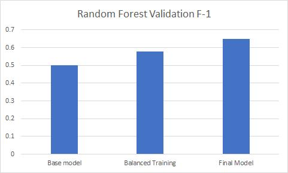

A Forcasting Model of Flight Delays in the U.S.
As flying has become a more popular and commonplace means of transportation, the nature of the air travel experience began to change. People now face new problems of flight delays, leading to both mental and financial costs. This project combines two datasets on airline performance and weather events and builds several models to predict whether a flight will likely delay. The final model of random forest has reached a weighted F1-score of 0.67 with a discussion of model limitation and fairness in the end. You can navigate through the page and find more details about this project. This project was conducted as part of a class project of ORIE 4741.
Various factors can lead to flight delays, including the airport’s traffic volume, different airline policies, and changing weather conditions. To make accurate predictions, we rely on the combination of two major datasets:
Airline reporting carrier on-time performance dataset, which contains flight information like start/destinations, airline code, etc [2].
US Weather Events, which contains weather warnings issued by weather stations in different airports [3].
After doing preliminary analysis (cleaning the dataset, finding correlations between features, and drawing graphs for visualizations) and defining the data scope (restraining data to include only the 10 airports with most flights), we conducted feature engineering using methods such dimentionality reduction, real encoding, and one-hot encoding.
During model building, we initially trained three models, including logistic regression, random forest, and boosting trees. We use tree-based ensemble methods because we believe that the features affect flight delay in a non-linear way, and tree-based methods can better capture such trends.
In addition, we used XG boost, which is a dominating used library in machine learning which can develop fast and high performance gradient boosting tree models. It improves upon Gradient Boosting by adding clever penalizations for trees and using Newton Boosting [5].
For all our models, we followed the same framework of train-test-validation split: We train our model on training data; validate and tune hyper-paraemters on k-fold of training data or on validation data; then we finalize the hyperparameters and produces a final test accuracy on the test set. Since we are facing a classification problem with an unbalanced dataset, we decided to use the weight F-1 score as a measure of how good our model performs. The detailed result can be found through the link to final report (at the end of the pgae).
Here is the final F-1 score we achieved in the end. The final hyperparameters of each of the following models can be found in the corresponding Jupyter Notebook through the link to Github repository (at the end of the pgae).
| Algorithm |
Weight F-1 Score |
| Logistic Regression |
0.5947 |
| Random Forest |
0.67 |
| Gradient Boosting Tree |
0.64 |
| AdaBoost |
0.65 |
| XGBoost |
0.66 |
| Dummy Majority Classifier |
0.49 |
We are confident that the results we obtained are unbiased estimations of the model’s true performance, because we followed a strict train-test-validation data split. The grid-search we performed is conducted using training data with k-fold cross-validation. By running our final model on unknown test data, the accuracy obtained should be an unbiased estimate of the true accuracy.
As weighted F-1 score sometimes can be misleading when the dataset is highly unbalanced, we also included a dummy majority model’s weighted F-1 score as a reference. Clearly, all our models were able to extract useful information beyond simply guessing every plane arrived on time. Considering the fact that we are only using data available long before the plane’s departure, we would say our model functions as a good source to look to for the customers and airlines when they plan their flights.
After balancing final performance and interpretability, we propose random forest as our final model.

We then use WMD (Weapons of Math Destruction) for the fairness analysis. This is a predictive model that has outcomes hard to measure, and predictions that cause negative consequences and create self-fulfilling feedback loops. We do not believe our model to be a WMD because:
1. Whether a flight is delayed or not is easily measurable. This means we can have a straightforward understanding of our model’s performance and observe its test error.
2. Our prediction will not create self-enforcing feedback cycles. If a flight is predicted to be run late, air-traffic controllers can assign faster routes and mitigate the problem instead of intensifying it.
References
[1] J. Rebollo and H. Balakrishnan, “Characterization and prediction of air traffic delays,” Transportation Research Part C: Emerging Technologies, vol 44, pp 231-241, Available: https://www.sciencedirect.com/science/article/pii/S0968090X14001041
[2] US Bureau of Transportation Statistics, “Airline Reporting Carrier On-Time Performance Dataset”, U.S, Published on: June 25, 2020, Accessed on: Nov 2021. Available: https://developer.ibm.com/exchanges/data/all/airline/#get-this-dataset
[3] Moosavi, Sobhan, Mohammad Hossein Samavatian, Arnab Nandi, Srinivasan Parthasarathy, and Rajiv Ramnath. “Short and Long-term Pattern Discovery Over Large-Scale Geo-Spatiotemporal Data.” In Proceedings of the 25th ACM SIGKDD International Conference on Knowledge Discovery & Data Mining, ACM, 2019.
[4] J. Herbas, “Using Machine Learning to Predict Flight Delays,” Oct. 17, 2020, Available: https://medium.com/analytics-vidhya/using-machine-learning-to-predict-flight-delays-e8a50b0bb64c\
[5] R. Gandhi, “Gradient Boosting and XGBoost,” May. 6, 2018, Available: https://medium.com/hackernoon/gradient-boosting-and-xgboost-90862daa6c77
[6] “Feature importances with a forest of trees,” Scikit-learn: Machine Learning in Python, Pedregosa et al., JMLR 12, pp. 2825-2830, 2011. Available: https://scikit-learn.org/stable/auto_examples/ensemble/plot_forest_importances.html
Final report (pdf)
Github link of the project including report and codes